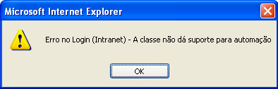
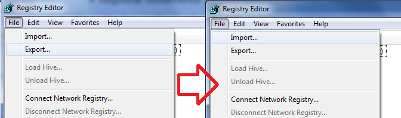
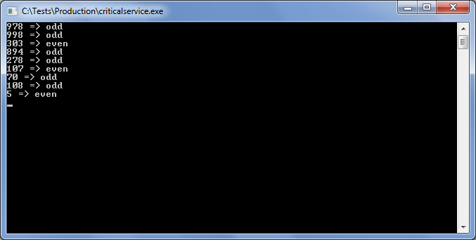
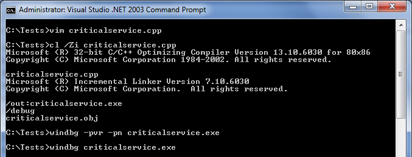

- Cargo (Ivan Engler, Ralph Etter, 2009)
- Então você ainda não usa controle de fonte?
- Suporte técnico
- Patch de emergência
- Patch de emergência 2
- II Seminário Portabilidade e Performance
# Cargo (Ivan Engler, Ralph Etter, 2009)
Caloni, 2010-11-01 <mostrasp> <cinema> <movies> [up] [copy]Se fosse resumir essa ficção-científica, diria que ela começa como Aliens - O Resgate e termina como Matrix. De fato, muitas características do longa nos lembra esses dois filmes. Porém, longe de se igualar em qualidade narrativa, este cai no lugar comum de passeios contemplativos pelo cenário com trilhas sonoras igualmente batidas.
Pautado em um grande mistério envolvendo o destino de seus passageiros, o roteiro escrito a 8 mãos flerta perigosamente com seus segredos usando uma fotografia nitidamente surreal ao mostrar no início uma bela mulher passeando por um campo de trigo com uma trilha sonora feliz, representando exatamente o oposto do que vemos a seguir: uma fria e gigantesca nave no espaço vazio. Há um esmero acima da média com a direção de arte que se preocupa com detalhes como o desenho dos equipamentos utilizando kanjis orientais e denunciando a origem de sua fabricação, o que cria uma âncora com a realidade de uma China em evolução crescente.
O fato da fotografia na primeira tomada ser tão bela contrapõe-se de maneira gritante com a fotografia do resto do filme, submergida em um escuro deprimente, arrastado por um figurino de roupas desgastadas, comprovando mais uma vez os tempos difíceis que vive a humanidade. Não só isso: o tédio impera no espaço. Quando não estão congelados para economizar tempo de vida, os passageiros nitidamente passam muito tempo sem fazer absolutamente nada de construtivo, como o cubo mágico resolvido na mesa da médica da equipe denuncia. Ao mesmo tempo, a direção previsível de Ivan Engler e Ralph Etter cria um suspense tipicamente forçado com o uso de uma trilha sonora sugestiva e cortes mais rápidos de cena, um lugar comum que não oferece mais escape de boas produções: o espectador já sabe o que o espera e se entedia disso.
No início desse texto dizia que o filme lembrava Aliens. A própria autópsia do comandante morto pela queda já remete ao oitavo passageiro, e a criança encontrada remete à sua continuação. E é interessante que ao mesmo tempo em que a médica corre perigo ainda estamos mais preocupados com o mistério na nave que com a vida dela, o que demonstra como a artificialidade do roteiro faz par com uma direção morna que não se preocupa, por exemplo, com a empatia da protagonista para o espectador.
A despeito dos cortes incessantes que repetem a fórmula do suspense durante toda a narrativa, não há na história um senso simples de continuidade, deixando o espectador mais perdido que interessado nos cortes ríspidos de câmera. Cada sub-conclusão é fechada pelo mesmo fade-out, outro recurso repetido à exaustão até a revelação da verdade, onde há uma mudança radical que poderia ser o trampolim para um pouco de ação intelectual.
Infelizmente o final se importa mais em muitas delongas e o batidíssimo artifício do tempo se esgotando. Ainda bem que eventualmente acaba.
# Então você ainda não usa controle de fonte?
Caloni, 2010-11-02 <computer> [up] [copy]Graças aos antigos SCMs, muitos programadores hoje em dia evitam ter que configurar um controle de fonte mínimo para seus projetos. E por um bom motivo: temos que programar e resolver problemas reais no dia-a-dia e não ficar configurando servidores de controle de fonte e lidando com conflitos na calada da noite. Isso vale tanto para o pessoal do Windows e o seu Visual Source Safe (eu que o diga) quanto para o pessoal do Unix/Linux e seu CVS ;aliás, hoje o pesadelo de ambos foi substituído pelo SubVersion: um pesadelo light.
Não há nada de errado nisso. Projetos robustos com uma equipe moderada ¿ 5 a 10 programadores ¿ precisam desse tipo de organização, e tornam a resolução dos problemas do dia-a-dia mais problemática **sem** esse controle. A questão reside para o programador solitário ou a equipe minúscula ¿ 2 a 4 programadores. Esses geralmente questionam o custo-benefício de terem o trabalho de configurar e manter mais um sistema. Além disso, isso implica em uma mudança de grandes proporções em cada membro da equipe: uma **mudança cultural**.
Portanto, a primeira decisão que deve ser tomada pelo programador que quer mudar as coisas é instalar um controle de fonte moderno para seus projetos caseiros. Quando digo moderno, digo distribuído.Distribuído porque 1) é possível começar desde já com três comandos simples, 2) quando alguém copia a pasta do projeto está levando todo o histórico junto e 3) pastas duplicadas são branches distintos que podem interagir no futuro.
Os três comandos simples não são nada do outro mundo: criar o repositório, adicionar arquivos e fazer **commit**.
Dica: Um commit é uma maneira de dizer ao controle de fonte: "já modifiquei o que tinha pra modificar, então mande tudo que tenho de novo para o controle".
Tanto faz qual controle você pretende usar. No meu exemplo usarei o Bazaar, que é a ferramenta que uso no dia-a-dia com minha pequena equipe e serve bem para programadores solitários também. Basicamente para ter o Bazzar instalado basta baixá-lo, next next e finish.

_Marcar para usar o PATH pode ser uma boa pra quem é fã de linha de comando._
Apesar de existirem firulas gráficas, gosto de usar o Bazaar na linha de comando porque faz você pensar direito antes de fazer commits, mas esteja livre para experimentar a maneira que achar melhor.
Botando a mão na massa
Isso vale para qualquer projeto que você esteja trabalhando. Pela linha de comando, navegue até o diretório do projeto. Digite os comandos abaixo seguidos de enter:
1. bzr init
2. bzr add
3. bzr commit -m "Primeiro commit no controle de fonte"
Pronto! Você está oficialmente com seu projeto dentro de um controle de fonte.
C:\Users\Caloni\Documents\Projetos>cd MeuProjeto C:\Users\Caloni\Documents\Projetos\MeuProjeto>bzr init Created a standalone tree (format: 2a) C:\Users\Caloni\Documents\Projetos\MeuProjeto>bzr add adding MeuProjeto.cpp adding MeuProjeto.h C:\Users\Caloni\Documents\Projetos\MeuProjeto>bzr commit -m "Primeiro commit no controle de fonte" Committing to: C:/Users/Caloni/Documents/Projetos/MeuProjeto/ added MeuProjeto.cpp added MeuProjeto.h Committed revision 1. C:\Users\Caloni\Documents\Projetos\MeuProjeto>
Os passos seguintes seguem o mesmo padrão, exceto o passo 1, que é substituído pelo seu trabalho:
1. trabalho
2. bzr add
3. bzr commit -m "Comentário sobre modificação que fiz"
C:\Users\Caloni\Documents\Projetos\MeuProjeto>vim MeuProjeto.cpp C:\Users\Caloni\Documents\Projetos\MeuProjeto>bzr add C:\Users\Caloni\Documents\Projetos\MeuProjeto>bzr commit -m "Corrigido bug de nao exibir cores" Committing to: C:/Users/Caloni/Documents/Projetos/MeuProjeto/ modified MeuProjeto.cpp Committed revision 2.
É só isso?
Basicamente, sim. É claro que um controle de fonte não se baseia apenas em commits. Existem arquivos a serem ignorados (os obj da vida) e eventualmente algum trabalho paralelo ou com mais programadores. No futuro poderá comparar versões diferentes do código. Porém, apenas seguindo essa simples receita acima você já pode se gabar de ter um controle de fontes confiável em seus projetos. Já estará se aproveitando desse controle no futuro, quando aprender mais sobre ele.
uso no dia-a-dia com minha pequena equipe e serve bem para programadores solitários também. Basicamente para ter o Bazzar instalado basta baixá-lo: http://wiki.bazaar.canonical.com/Download
# Suporte técnico
Caloni, 2010-11-05 <computer> [up] [copy]Máquina com parte do registro corrompida, notadamente alguma sub-chave de HKEY_CLASSES_ROOT. Resultado: ao rodar um script que abre uma segunda janela e tenta usar seu método focus é exibida a seguinte mensagem:
"<Mensagem do cliente> - A classe não dá suporte para automação"
Abaixo um exemplo simples para ter uma ideia em JS:
var win = window.open( 'minha_url_do_coracao.htm' ); win.focus(); // aqui dá o erro
A primeira coisa que se faz nesse caso é pesquisar no Google por pessoas que já tiveram esse problema. A maioria dizia ser necessária registrar novamente as DLLs do navegador/shell, coisa que fizemos à exaustão e não resolveu o problema. Também imaginamos haver relação com a versão da **SDocVw.dll** que estava alocada na lista de assemblies .NET cacheados, o chamado GAC. Ou seja, já estávamos viajando geral.
No meio dos procedimentos batidos que todos fazem a lista abaixo resume bem:
* Restaurar instalação do Internet Explorer.
* Atualizar Internet Explorer.
* Rodar Windows Update.
* Registrar novamente DLLs do Shell (ShDocVw.dll, etc).
No meio das análises não-tão-batidas que foram feitas estavam os seguintes itens:
* Log de operações pelo Process Monitor da abertura do browser até o erro.
* Dump gerado no momento da mensagem de erro.
* Comparação de registro exportado com máquina sadia.
Nada parecia resolver o impasse, a não ser reinstalar o Windows, coisa que o cliente não queria. Dessa forma, A última tentativa não-enlouquecida de tentar descobrir a causa do problema foi usar uma VM e importar o registro exportado da máquina defeituosa.
Que não revelou a anomalia.
Partindo disso, imaginei que o que ocorria era que havia algo faltando no registro danificado, e não algo a mais. Dessa forma, realizei a seguinte operação:
* Exportei o registro da máquina saudável.
* Transformei a exportação em exclusão total das chaves.
* Importei ambos os registros no esquema "apaga tudo cria tudo de novo".
Problema reproduzido.
Agora restava saber qual chave exata estava faltando e o que isso impactava no comportamento do browser.
O registro exportado da VM possuía cerca de 30.000 linhas com chaves e sub-chaves. Se fosse feita a importação por partes, dividindo-se sempre pela metade e testando o acesso à página todas as vezes, teríamos no máximo que fazer uns 15 testes.
Foi esse o procedimento seguido:
1. Criar snapshot com o estado inalterado do registro.
2. Apagar metade do registro original exportado (máquina real).
3. Arrastar metade do registro original e importá-lo (apaga chaves).
4. Importar registro danificado do cliente (já na VM).
5. Se deu erro de novo, repassar os passos 2 a 3.
6. Se não deu erro, testar os passos 3 e 4 com a outra metade.

Essa série de passos foi reproduzida em menos de uma hora até chegarmos a apenas uma linha no registro:
[-HKEY_CLASSES_ROOT\CLSID\{C5598E60-B307-11D1-B27D-006008C3FBFB}]
Que se revelou pertencer à DLL dispex.dll:
_"dispex.dll is a module that contains COM interfaces used by Visual Basic scripts"_
Pesquisando soluções de restauração achei esse KB que explica que existe um aplicativo chamado McRepair que teoricamente conserta a bagunça.
Não conserta.
Porém, ao usar o Method 1 (registrar novamente a DLL) o problema foi resolvido. Exportei o registro antes e depois da operação e por algum motivo a máquina do cliente estava com o GUID das interfaces IDispatchEx e IObjectIdentity adulteradas:
Antes: C5598E60-B307-11D1-B27D-006008C3FBFB} Depois: 10E2414A-EC59-49D2-BC51-5ADD2C36FEBC}
Realizei o mesmo teste com nossa DLL que gerou o problema inicial e descobri que não houve mudanças nessa parte do registro por conta dela.
Fica assim indefinida a origem do "corrompimento" dessa parte do registro, apesar de localizada.
Esse artigo é pra mostrar que não é só de ifs e elses que vive um programador =)
# Patch de emergência
Caloni, 2010-11-08 <computer> [up] [copy]Após um projeto muito bem sucedido, entregue no prazo e homologado em tempo recorde, você e sua equipe estão aproveitando suas devidas férias nas Bahamas, tomando água de coco na sombra de uma palmeira e apreciando a beleza natural da região. Ambas as belezas. =)
Mas eis que liga o seu gerente para o celular vermelho que te entregou no caso de emergências críticas e te avisa que um problema crítico foi detectado em um serviço crítico: o detector de pares. Consegue ver o erro?
Oh, meu Deus!
Com toda a calma do mundo, você saca o seu netbook, baixa a versão homologada do controle de fonte e descobre facilmente o problema, gerando um patch e recompilando o projeto.
#include <windows.h>
#include <stdio.h>
#include <time.h>
#include <stdlib.h>
void DoProcess()
{
int nextNumber = rand() % 1000;
//bool even = nextNumber % 2;
bool even = !(nextNumber % 2);
printf("%d => %s\n", nextNumber, even ? "even" : "odd");
}
int main()
{
srand( time(0) );
while( true )
{
DoProcess();
Sleep(3000);
}
}
Feliz da vida, avisa o seu chefe que a única coisa que precisam trocar é o serviço crítico. Parar, trocar o arquivo, reiniciar o serviço. Simples.
Porém, ele lhe avisa que esse é um serviço crítico, que não pode parar por nenhum segundo sequer. A atualização terá que ser feita sem parar o ciclo ininterrupto de pares/ímpares chegando do gerador de números randômicos.
Mais uma vez calmo da vida, você diz que isso é coisa de criança. Tudo que precisa fazer é atualizar a versão certa na memória. O arquivo poderá ser renomeado e, quando o serviço puder ser reiniciado, a versão nova será executada. Enquanto isso, o patch na memória bastará para corrigir o problema e não causar nenhum momento inoperante.
Tudo que você precisa é abrir o processo pelo WinDbg, encontrar a versão defeituosa e substituir os bytes certos.
Nota: O parâmetro -pv permite depurar um processo de forma não-invasiva, mas as threads serão suspensas. Já com -pvr podemos depurar de forma não-invasiva e ainda conseguir manter as threads do processo rodando.
Analisando o disassembly da função nova e antiga podemos perceber que o tamanho delas não mudou (bom sinal), mas o uso dos registradores e a lógica interna teve uma alteração significativa (mau sinal):
Função antiga: bool even = nextNumber % 2; test edx,edx setne al mov byte ptr [ebp-1],al movzx ecx,byte ptr [ebp-1] test ecx,ecx je criticalservice!DoProcess+0x3f (0040105f) Função nova: bool even = !(nextNumber % 2); neg edx sbb edx,edx inc edx mov byte ptr [ebp-1],dl movzx eax,byte ptr [ebp-1] test eax,eax je criticalservice!DoProcess+0x3f (0040105f)
Podemos começar escrevendo a função nova da memória do processo de teste para um arquivo, e lendo em seguida para cima da função antiga. Só que para isso temos que nos certificar que os endereços que referenciam para fora da função sejam os mesmos. Nesse caso, felizmente, são.
0:001> .writemem c:\tests\newfunc.dat criticalservice!DoProcess 0040107e Writing 5f bytes.
Em seguida iremos sobrescrever a função antiga no processo em execução. Para evitar crashes é vital que tenhamos certeza que a função não estará sendo executada nesse momento. No nosso caso basta aguardar a entrada na função Sleep da API, que dorme por 3 segundos, tempo suficiente para a atualização.

0:000> .readmem c:\tests\newfunc.dat criticalservice!DoProcess 0040107e Reading 5f bytes.
Atualizada a função, apenas nos lembramos de renomear o arquivo antigo e atualizar o novo para evitar reativar o problema. Agora podemos voltar para a apreciação das belezas da natureza...
# Patch de emergência 2
Caloni, 2010-11-09 <computer> [up] [copy]No artigo anterior fizemos um patch rapidinho na memória se aproveitando de um Sleep nojento que o código nos forneceu.
E se não houvesse Sleep?
As chances de estarmos escrevendo no momento em que a função está sendo executada são tremendas, de forma que não poderíamos sobrescrevê-la sem correr o risco de um crash.
Uma solução alternativa para isso é alocar um novo pedaço de memória para a versão corrigida e trocar o endereço de chamada na função main.
windbg criticalservice3.exe
0:000> uf DoProcess
criticalservice3!DoProcess [s:\docs\artigos\criticalservice3.cpp @ 8]:
8 00401020 55 push ebp
...
12 0040107d 5d pop ebp
12 0040107e c3 ret
0:000> .writemem <font color="#008000">DoProcess.func</font> 00401020 0040107e
Writing <font color="#0000ff">5f bytes</font>.
windbg -pvr -pn criticalservice2.exe
0:000> .dvalloc 0x5f
Allocated 1000 bytes starting at 00030000
0:000> .readmem <font color="#008000">DoProcess.func</font> 00030000 <font color="#0000ff">L5f</font>
Reading <font color="#0000ff">5f bytes</font>.
0:000> uf 00030000
00030000 55 push ebp
...
0003005d 5d pop ebp
0003005e c3 ret
Antes de trocarmos o endereço dentro do main precisamos "consertar" a função copiada. Ela está usando as funções globais rand e printf, e as chamadas usam offsets relativos. Como agora a função está em outro offset, temos que reconstruir as chamadas:
00401026 e8da000000 call criticalservice3!rand (00401105) 00030006 e8da000000 call 000300e5 0:000> a 00030006 00030006 call 0x00401105 call 0x00401105 0003000b 00401073 e852000000 call criticalservice3!printf (004010ca) 00030053 e852000000 call 000300aa 0:000> a 00030053 00030053 call 0x004010ca call 0x004010ca 00030058
Agora a função está pronta para ser usada.
0:000> uf 00030000
00030000 55 push ebp
00030001 8bec mov ebp,esp
00030003 83ec0c sub esp,0Ch
00030006 e8fa103d00 call criticalservice2!rand (00401105)
0003000b 99 cdq
...
0003004e 6828a04000 push offset criticalservice2!GetSystemInfo
00030053 e872103d00 call criticalservice2!printf (004010ca)
00030058 83c40c add esp,0Ch
0003005b 8be5 mov esp,ebp
0003005d 5d pop ebp
0003005e c3 ret
0:000> uf main
criticalservice2!main [s:\docs\artigos\criticalservice2.cpp @ 16]:
16 00401080 55 push ebp
...
criticalservice2!main+0x1f [s:\docs\artigos\criticalservice2.cpp @ 21]:
21 0040109f e861ffffff call criticalservice2!ILT+0(?DoProcessYAXXZ) (00401005)
22 004010a4 ebf0 jmp criticalservice2!main+0x16 (00401096)
É nessa parte que trocaremos o endereço o endereço 00401005 pela memória alocada. Note que essa escrita é muito rápida e o programa lê esse endereço por muito pouco tempo se compararmos com todas as intruções que são executadas. No entanto, essa escrita não é atômica, e mesmo que as chances sejam extremamente remotas, ainda assim pode haver uma colisão no acesso à essa parte.
É salutar rezar por 10 segundos.
0:000> a 0040109f 0040109f call 0x00030000 call 0x00030000 004010a4
E voilà! A partir do momento em que digitei o call seguido de enter, a função nova já começou a operar em cima do processo ainda rodando. Se quisermos voltar a função antiga, sem problemas:
0:000> a 0040109f 0040109f call 0x00401005 call 0x00401005 004010a4
Não façam isso em casa, crianças ;)
# II Seminário Portabilidade e Performance
Caloni, 2010-11-12 <ccppbr> [up] [copy]Aqui estamos nós de novo. Mais uma vez a Tempo Real Eventos irá organizar esse evento de final de ano. E mais uma vez, junto dos meus amigos, irei palestrar sobre um item indispensável no nécessaire de todo escovador de bits: assembly gerado pelo compilador. Vamos falar brevemente sobre o funcionamento de um código assembly 32 bits e passar para a análise dos compiladores modernos e o que eles fazem para tornar o código ainda mais rápido do que o próprio fonte em C++.
* Gerando código assembly;
* Guia ultra-rápido de assembly;
* Recursividade sem problemas na pilha;
* STL aumenta performance? (exemplos práticos);
* Assembly 64 bits.
Uma outra dúvida pertinente (e discutida nos bares nerds da cidade) é se usar código STL não deixaria mais lento o resultado final, já que ele é cheio das abstrações. Por mais que autoridades competentes no funcionamento da linguagem como Pedro Lamarão e Thiago Adams digam que as otimizações do compiladores modernos na STL/Boost são diversas vezes mais eficientes que o código artesanal de um programador, sempre fica aquela pulga atrás da orelha, pulga esta que podemos matar facilmente analisando o assembly gerado. E essa confiança extra nos dará novas chances de programar coisas legais de verdade, e não ficar ensebando um código que já está na sua velocidade máxima.
Então é isso aí. Espero que tenhamos uma manhã e uma tarde agradáveis nesse mundo da escovação de bits.
[2010-10] [2010-12]